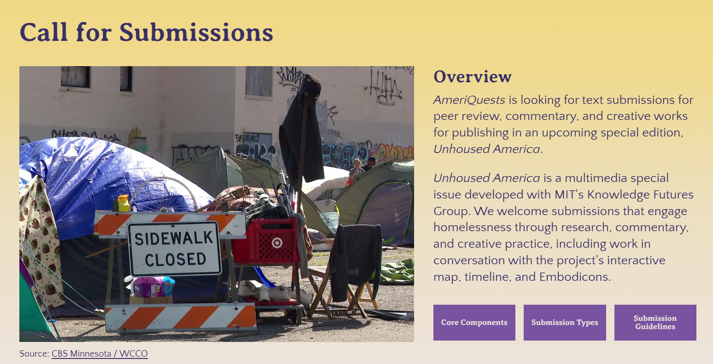
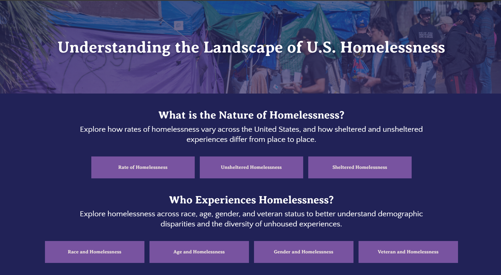
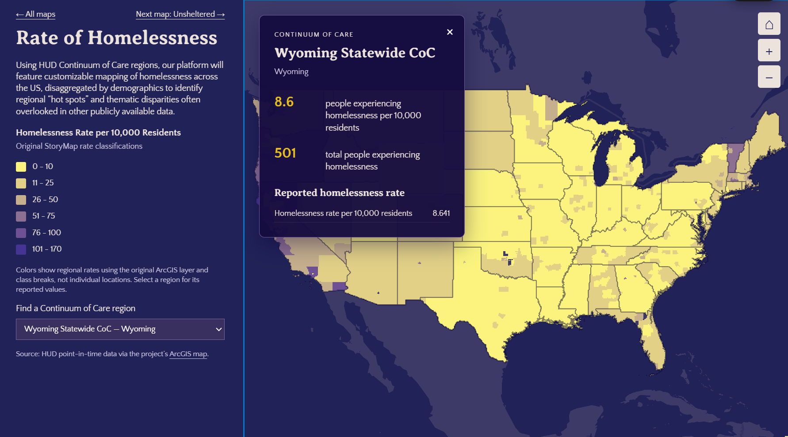
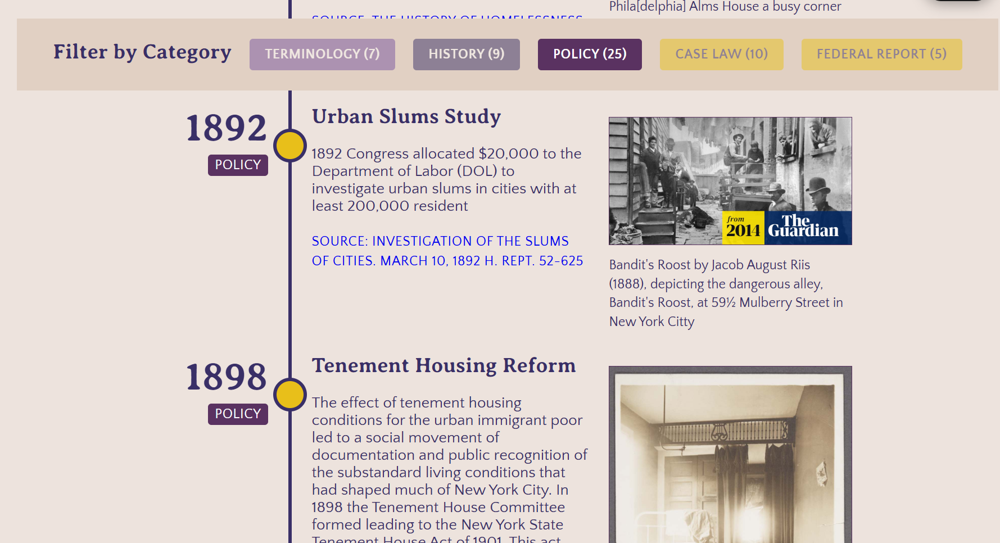

Unhoused America
Homelessness Research & Digital Storytelling
Unhoused America is an ongoing multimedia special issue of AmeriQuests that challenges persistent stereotypes about homelessness in the United States through composite stories, interactive maps, and a historical timeline.
As a research assistant to Professor Dana McKinney White, I contributed to the website’s design as part of the project team.
Homepage
The homepage introduces the project and invites contributions to the special issue.

Maps
Topic navigation and interactive regional data make patterns of homelessness accessible to explore.


Timeline
Category filters connect historical events with their social, legal, and policy context.
